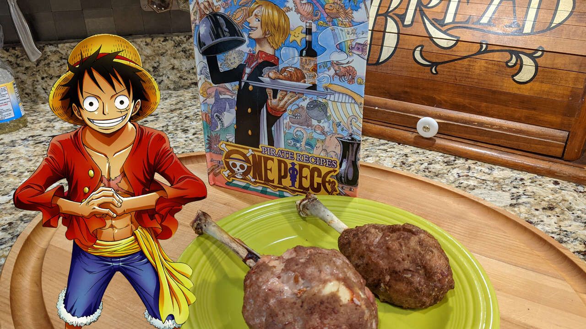

Meat on the Bone
Home

Description
Luffy's iconic "Meat on the Bone" from One Piece is a cartoon-style dish featuring a large, rounded meatball wrapped around a central bone. In other words, it is a Scotch egg made with chicken.
Ingredients
- 4 chicken drumsticks
- 4 hard-boiled eggs
- 1/4 cup breadcrumbs
- 3 tablespoons milk
- 18 ounces (500g) ground chicken
- 1 teaspoon salt
- a little black pepper
- 1 egg
- vegetable oil
Steps
- Make chicken drumstick "tulips". Use kitchen scissors to cut the meat loose from the handle end of the drumstick. Roll the meat down the bone until it is fully inside-out at the end.
- Soak the breadcrumbs in milk. Knead mix in a bownl, then add breadcrumbs and knead again.
- Fold the meaty end of the drumstick around a hard-boiled egg. If the meat doesn't cover well enough, add cuts to loosen it up. Oil hands lightly and cover drumstick and egg with step 2's breadcrumb mixture.
- Bake at 400 degrees F (200 degrees C) for 15-20 minutes, watching carefully.